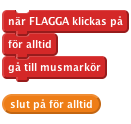
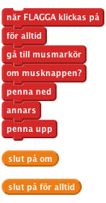
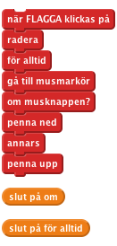
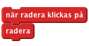
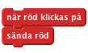
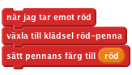
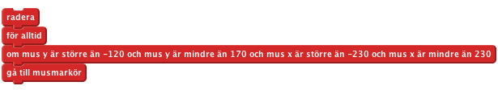
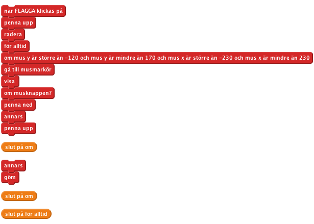

Nivå 3
Introduktion: I det här projektet bygger vi ett ritverktyg som du kan använda för att skapa din egen konst. Du kan byta färg, tömma skärmen, göra stämplar och mycket mer!
Vi börjar med en penna som ritar när du drar runt den på Scenen.

Nu vill vi använda den här pennspriten som en riktig penna. Om du tittar under avdelningen Penna hittar du alla möjliga block som har att göra med att rita. De som vi ska börja med är penna ned och penna upp.

Klicka på den gröna flaggan. Följer pennan muspekaren? Vad händer om du håller nere musknappen och flyttar musen? Bry dig inte om färgen på pennan än.

Klicka på den gröna flaggan.
Försvinner din teckning när du klickar på den gröna flaggan?
SPARA DITT PROJEKT
Istället för att behöva starta om hela projektet för att tömma skärmen, vill vi ha en knapp som suddar ut teckningen. Den ska göra det genom att använda blocket radera.

Klicka på den gröna flaggan.
Tömmer raderaknappen din skärm?
SPARA DITT PROJEKT
Hittills kan vi bara rita blåa streck. Nu vill vi rita med fler färger! Vi lägger till lite fler sprites längst ner på skärmen. Spritearna kommer se ut som färgade knappar. Om vi klickar på en knapp kommer den byta färg på strecket vi ritar. För att låta oss hålla koll på vilken färg vi använder ska knappen även byta färg på pennspriten.

Ja, det är allt den gör. Grovjobbet görs av pennan.
Importera en ny röd klädsel till pennan, använd resources/red-pencil. Fixa så att mittpunkten blir pennspetsen som vi gjorde förut.
Tips: om du klickar på den färgade rutan i blocket sätt pennans färg till så kan du klicka med pipetten på den röda spriten och sno dess färg till rutan.

Klicka på den gröna flaggan.
Börja med att rita ett streck. Klicka sen på spriten som gör pennan röd och rita lite mer. Bytter pennan klädsel? Ritar den i rött nu? Ritar den från pennspetsen?
SPARA DITT PROJEKT
Klicka på den gröna flaggan.
Fungerar alla färgvalknappar? Byter de pennans klädsel till rätt färg? Får de alla pennan att måla med rätt färg? Ritar alla pennans klädslar med pennspetsen?
SPARA DITT PROJEKT
Du har säkert märkt att du kan måla överallt på skärmen, till och med på kanten. Så vill vi inte ha det. Vi vill ha målningen i mitten av Scenen. Vi kan lösa det genom att se till att pennan inte kan lämna ritytan - den ljusgrå delen av Scenen.
Kom ihåg att Scratch pratar om punkter på skärmen med en x- och en y-axel. Vår rityta finns mellan 230 och -230 på x-axeln och 170 och -120 på y-axeln. Vi kan vända de här värdena i ett om-block, då ser vi till att muspekaren är inom den här ytan innan pennan börjar rita där.
För att göra det här kan vi göra ett nytt block runt omkring ditt nuvarande gå till... om-block, och inuti det nya om-blocket kolla efter följande:
mus y är större än -120 och mus y är mindre än 170 och mus x är större än -230 och mus x är mindre än 230
Obs! för att göra det här kommer du behöva använda flera stycken och-operatorblock, ett för de två villkoren för mus x, ett för de två villkoren för mux y, och så ytterligare ett för att sätta ihop alla:

Eftersom vi inte kan rita utanför ritytan kan vi gömma pennverktyget när vi lämnar ytan. För att göra det byter vi ut blocket om mot ett om annars -block. Behåll samma villkor för om, och visa pennan om det är sant, göm den annars.

Klicka på den gröna flaggan.
Kan du fortfarande rita inom ritytan? Kan du rita utanför ritytan? Vad händer med pennan när du lämnar ritytan och går tillbaka till den?
SPARA DITT PROJEKT
Det är kul att rita streck, men det händer att man gör ett misstag och vill kunna sudda. Vi kan göra det med ett nytt pennverktyg som ritar med grått (samma färg som bakgrunden).
Lägg till en ny knappsprite till Scenen för att kunna välja suddgummit. Använder klädseln resources/eraser som du gör lite mindre så att den passar in längst ner på Scenen. Den ska fungera på samma sätt som de andra färgvalsknapparna, och sända ut ett suddmeddelande.
Pennspriten ska svara på suddmeddelandet genom att byta pennfärg till grå (kom ihåg att du kan använda pipetten för att välja färgen från bakgrunden). Den kommer även behöva en klädsel som ser ut som ett suddgummi: använd samma klädsel, resources/eraser. Kom ihåg att ändra klädselns mittpunkt.
Klicka på den gröna flaggan.
Suddar suddgummit? Fungerar det ända fram till kanten? Kan du byta mellan penna och sudd?
SPARA DITT PROJEKT
Det nästa vi ska göra är att skapa ett stämpelverktyg som vi kan ha för att stämpla små bilder på teckningen. Aktivitetslista
Klicka på den gröna flaggan.
Fungerar stämpelverktyget som du vill?
Vad händer om du byter tillbaka till ett av de vanliga pennverktygen?
SPARA DITT PROJEKT
Snyggt jobbat, nu är du klar med de grundläggande stegen i det här projektet. Pröva de här utmaningarna!
Vi lägger till en specialpenna som målar i regnbågens alla färger. Det kan man ju inte göra med riktiga pennor, så det blir kul att få datorn att göra det. Hemligheten bakom regnbågsmålning är blocket ändra pennans färg med.
Lägg först till regnbågsverktygväljarspriten och regnbågsverktygklädseln till pennspriten:
Du behöver skapa ett script som byter pennfärg många gånger varje sekund för att skapa regnbågseffekten (Att ändra siffran med 5 var 0,05:e sekund funkar bra, men testa med olika värden). Scratchkortet om timers förklarar hur du kan få något att hända med jämna mellanrum. Använd blocket "ändra pennans färg med 5" istället för blocket "ändra timer med -1" inuti loopen.
Du behöver också kontrollera den loopen så att den bara ändrar pennfärgen när du har valt regnbågspennan, annars kommer alla pennor rita regnbågsfärger! Du kan åstadkomma det här på ett sätt som är väldigt likt hur pennspriten byter mellan penn- och stämpelläge. Du behöver skapa en variabel som heter regnbågsbyte och som har värdet sant när du vill ha regnbågseffekt och falskt när du inte vill det. Varje gång pennan svarar på ett verktygsbytesmeddelande ska den sätta värdet på regnbågsbyte därefter.
Använd det du lärt dig från stämpelsteget ovan för att kontrollera regnbågseffekten. Scriptet som svarar på verktygsväljarmeddelanden kommer sätta två variabler var: pennläge och regnbågsbyte.
Klicka på den gröna flaggan.
Fungerar regnbågsverktygen som du vill?
Vad händer när du byter tillbaka till någon av de vanliga pennverktygen?
SPARA DITT PROJEKT
Istället för att använda verktygsväljarspritearna längst ner på scenen kan du använda tangentbordet för att välja olika verktyg. Du kan använda [] nedtryckt?-block för att svara på tangentbordstryckningar. För varje tangent du vill använda måste du dra in ett nytt [] nedtryckt?-block, som skickar samma meddelande som respektive verktygsväljarsprite skickar när den klickas på. Lägg till dessa scripts till scenen.
Det kan vara bra att låta kortkommandot vara en bokstav som påminner om det man ska göra med det, till exempel s för stämpla.
Klicka på den gröna flaggan.
Har alla verktyg ett eget kortkommando nu? Fungerar alla på rätt sätt när du väljer dem med tangetbordet? Är de rätta verktyget fortfarande valda med verktygsväljarspritearna på scenen?
SPARA DITT PROJEKT
En annan funktion som de flesta ritprogram har är att kunna byta storlek på pennan. Vi lägger till det. Det finns en svårighet dock, nämligen att ibland behöver vi ändra storlek på pennan och ibland behöver vi ändra storlek på pennspritens klädsel. Det beror på om vi använder en penna eller en stämpel.
Skapa två nya verktygsväljarsprites, som du kallar större och mindre. Den ska ha klädslarna resources/bigger-selector och resources/smaller-selector, och ska skicka meddelandena "större" och "mindre".
Pennspriten kan svara på meddelandena genom att ändra antingen pennstorlek med 1 eller klädselstorlek med 10, beroende på värdet hos variabeln pennläge (använd ett om-annars-block, ungefär på samma sätt som spriten väljer mellan att rita eller stämpla). Glöm inte att skapa kortkommandon för förstoringen och förminskningen. T.ex. upp- och nertangenterna.
SPARA DITT PROJEKT
Du kanske har lagt märke till att varje gång du ändrar storlek på stämpeln ändras också storleken på pennan när du byter till den. För att förhindra att det händer behöver du sätta storleken till 100% varje gång du byter till ett pennverktyg. Då får verktyget rätt storlek.
För att göra allt ännu bättre, låt stämpeln komma ihåg vilken storlek den hade innan du valde pennverktyget och gå tillbaka till den storleken när du väljer stämpelverktyget igen. Det lättaste sättet att göra det här är att skapa en ny variabel som heter "stämpelstorlek", som uppdateras med den nuvarande storleken varje gång stämpelns storlek ändras. När stämpelverktyget sen väljs kan den hämta sin storlek från den här variabeln.
Klicka på den gröna flaggan.
Fungerar storleksförändring på pennorna?
Vad händer om du byter till en stämpel, ändrar storleken på den och sen byter tillbaka till en penna?
SPARA DITT PROJEKT
Snyggt jobbat, nu är du klar! Varsågod och rita något vackert.
Glöm inte att du kan dela det här spelet med kompisar och familj genom att klicka på Dela ut i menyn!